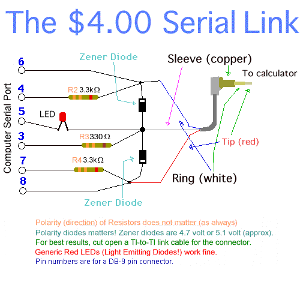

![[Parallel Cable Schematic]](graphics/parallel_link.gif)
TI Link Protocol Guide - Link cables
There are many types of link cables:
Additional information, schematics, pictures and building instructions for these link cables can be found at http://www.ticalc.org/.
This was the first link cable designed for connecting a TI calculator to a computer (PC or Macintosh). It connects to a serial port on the computer, either 25-pin or 9-pin (with an adapter). This is one of three cables (the others are the PIClink and the fastAVRlink) that work on Macintosh computers.
The Grey TIGraphLink cable does not use the hardware flow control to communicate, but the DTR and RTS pins are used to provide the power supply. These lines change from -9V to +9V (values measured on my PC) when the TIGraphLink software starts. At the same time, the CTS line jumps from 0 to -4V and the DSR line changes from -9V to +9V. The grey cable can therefore be detected by toggling the DTR and RTS lines, then checking the state of the CTS and DSR lines.
Characteristics: 9600 baud, no hardware flow control, 1 start bit, 8 data bits, 1 stop bit and no parity.
This is the second link cable designed by Texas Instruments. The most recent version of TI's Graph Link Software includes support for this cable, which is compatible with the '$4 Serial Link'. It does not work on a Macintosh computer.
In our day and age, this was the first alternative to the expensive
Grey TI Graph Link. This cable has three
drawbacks: it works only on PC computers, it requires some CPU
computation since the hardware protocol is directly
managed by the processor, and TI's software does not support it.
Nevertheless, it is cheap and easy to build, and more and more linking
programs are supporting it.
This was the second alternative to the expensive Grey TI Graph Link. This cable also had the same drawbacks as the Parallel Link, but TI recently added support for it in the TI Graph Link software (since it is compatible with the Black TI Graph Link). Again, it is cheap and easy to build and supported by more programs.
![[Electrical schematic of $4 Serial Cable]](graphics/serial_link.gif) |
 |
I have no detailed information about this link cable. It was
designed by Magnus Hagander for the TI85 only.
Information on this cable can be found at http://www.ticalc.org/.
![[Electrical Schematic of Connect85 Cable]](graphics/c85sch.gif)
The BCC Serial Link is a homemade version of TI's black graphlink cable. The BCC Serial Link is compatible with TI's graphlink software using the "black cable" setting. Like the Black TI Graph Link, it cannot be used on a Macintosh computer.
![[Electrical Schematic of BCC Serial Cable]](graphics/bccsl_link.gif)
NPN : 2N4401
PNP : 2N3906
Diodes : 1N4148
This cable, designed by Sami
Khawam, is the first home-made link cable
that is fully compatible with the Grey TIGraphLink. It should work on
the Macintosh, but it was never officially
tested.
This link cable is a bit more complex than other home-made link cable
because it converts data between the protocol
used by the calc and the asynchronous RS232 protocol used by the
computer. Nevertheless, it is cheaper than the
Grey TIGraphLink.
![[Electrical Schematic of PIClink Cable]](graphics/piclink_link.gif)
This cable, designed by Romain Liévin,
is the second
home-made link cable fully compatible with the Grey TIGraphLink. It
should work on Macintosh but it has never officially
been tested.
This link cable is also a bit more complex than other home-made link
cable because, like the PIClink, it converts
data between the protocol used by the calc and the asynchronous RS232
protocol used by the computer. Nevertheless,
it is cheaper than the Grey TIGraphLink.
This cable has some features that the PIClink does not have:
![[Electrical Schematic of fastAVRlink Cable]](graphics/fastAVRlink_link.gif)
This is the third link cable designed by Texas Instruments. The TI's Graph Link Software does not support this link cable. In the meanwhile, TI released a new software called 'TI-Connect' which supports it. The TI GraphLink USB is primarily sold for use with Macintosh, but it can be used on any architecture that supports USB. This cable is faster than any other currently available, including the FastAVRLink. It can reach a maximum rate of 5.6 KBytes/s.
This link cable is based on a CY7C64013 microcontroller (µC) from Cypress Semiconductors. Cypress is well known for its USB devices (mouse, hubs, ...).
The cable is a Full-Speed (FS, 12Mbit/s) device, USB1.1 compliant, under a proprietary class. It does not fit into any existing class (HID, printer, ...) and so it requires a specific device driver (you can find a such driver for Windows/Linux/Mac OS-X on the LPG web site).
The device uses 'Bulk' mode for data transfers. There are two bulk
endpoints (IN & OUT) and one control endpoint (mandatory).
Transfers are achieved by packets. The endpoints advertise a maximum
packet size of 32 bytes.
Technical informations: here.
From http://tilp.info/docu.html.